Matter around us is primarily categorized into three states—solids, liquids, and
gases—based on the strength of their intermolecular forces
Solids:
In solids, the intermolecular
forces are strong,
rendering them a fixed shape and size that do not change easily.
Liquids: In liquids, the intermolecular forces are
weaker than those in solids, allowing them to change shape with ease. However,
significant effort is required to modify their volume or density.
Gases: Gases have minimal forces
between their molecules,
making it easy to change both their shape and density.
Liquids and gases together are called fluids, i.e., that which can flow.
While these definitions provide a general understanding of the states of matter,
they aren't precise. For instance, substances like asphalt and plastics,
typically regarded as solids, can behave like liquids over extended periods.
Additionally, the state of a substance—whether solid, liquid, or gas—often depends
on temperature and pressure conditions. The time taken for a substance to reshape
under external forces often determines its classification in specific analyses.
A fluid is a collection of molecules that are randomly arranged and held together by
weak cohesive forces and by forces exerted by the walls of a container. Their
reduced intermolecular forces enable fluid layers to slide over one another,
granting them the ability to flow. As highlighted before, both liquids and gases
possess this flowing property, categorizing them as fluids.
In this chapter on fluid mechanics, we begin with fluid statics, examining the
mechanics of stationary fluids. We'll derive expressions for the pressure exerted by
a fluid, understand the variations in pressure, and the buoyant forces
exerted by fluids. Subsequently, we transition to fluid dynamics, focusing on the
behavior of moving fluids.
In our treatment of the mechanics of fluids, we shall see that we do not need
to learn any new physical principles to explain such effects as the buoyant force
acting on a submerged object and the dynamic lift acting on an airplane wing.
Established principles such as the laws of motion and energy conservation equip us
with the necessary tools for these analyses.
Density
Density is a property of a material independent of its shape and size. Density,
generally represented by \(\rho\), is
defined as mass \(dM\) of the material per unit its volume \(dV\). Hence,
\(\qquad \rho=\frac{dM}{dV}\)
The SI unit of density is \(\text{kg}/\text{m}^3\). The density water is suggested
to be remembered as \(1,000\text{kg}/\text{m}^3\) or \(1 \text{kg}/\text{L}\) or \(1
\text{g}/\text{cm}^3\)
The ratio of density of a material with that of density of water is called relative
density or specific density or specific gravity. This being a ratio, has no units.
For example, stating specific density of
aluminium being 2.7 means its density is \(2.7\times 10^3\text{kg}/\text{m}^3\).
If two different materials are mixed, the equivalent density of the mixture can be
calculated by formula:
Consider a force \(dF\) acting perpendicularly to an
infinitesimally small area \(dA\). The pressure \(P\) associated with this area can
be expressed mathematically as::
\(\qquad
P=\frac{dF}{dA}
\)
The unit for pressure in the SI system is the Pascal (Pa),
equivalent to \( \text{N}/\text{m}^2 \).
In the mechanics of solids, the primary focus is on forces. However, in fluid
mechanics, the concept of pressure becomes important.
Even in a stationary fluid, its molecules are in constant motion. As a result,
surfaces in contact with the fluid experience continuous collisions from these
moving molecules. These collisions result into a perpendicular force distributed
over the
contact area, leading to the concept of pressure.
Imagine a hypothetical pressure-sensing device as illustrated below. For the sake of
our discussion, let's assume the device's interior contains a vacuum and is equipped
with an ideal spring.
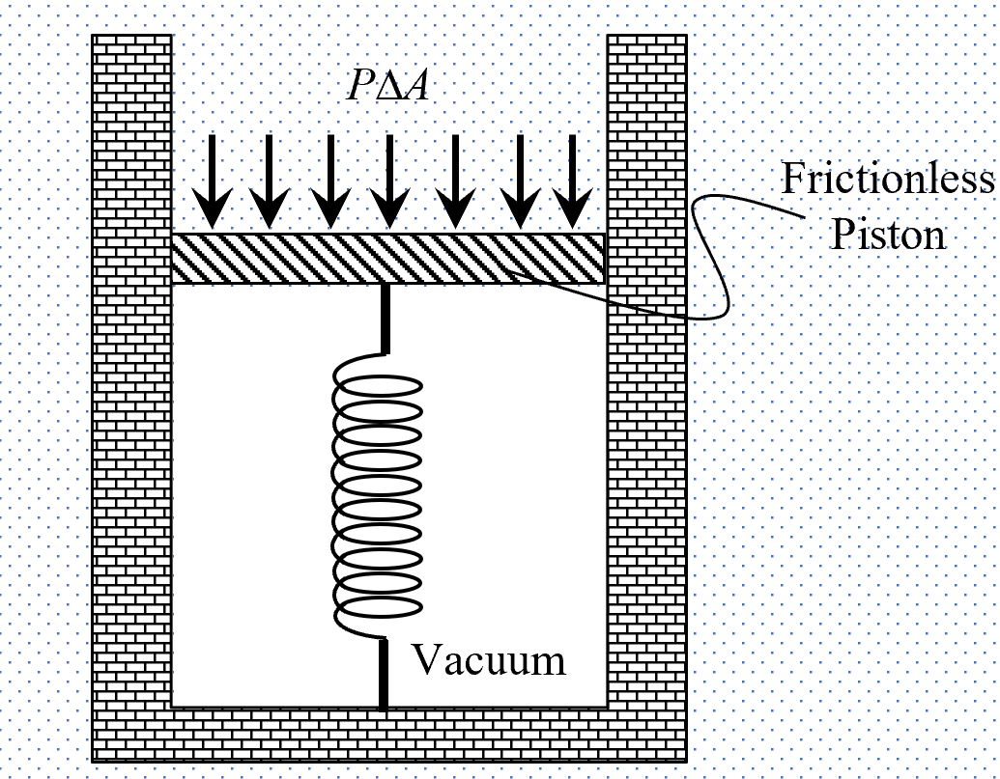
Diagram: Theoretical pressure sensor.
The greater the external fluid pressure, the more the spring inside the device
compresses. At equilibrium, the compression of the spring directly relates to the
external fluid pressure. Throughout this chapter, we'll employ this conceptual
sensor to
enhance our understanding of pressure in various contexts.
Pressure sensor
Imagine a fluid situated in a region free of gravitational influence. Due to the
inherent random motion of fluid particles, the force exerted by these particles on
any given surface remains uniform, irrespective of the surface's orientation or
position.
When a pressure-sensing instrument is introduced into this fluid, the compression
observed in the spring remains unchanged, regardless of the instrument's
orientation or position within the fluid. This behavior is depicted in the
subsequent diagram:
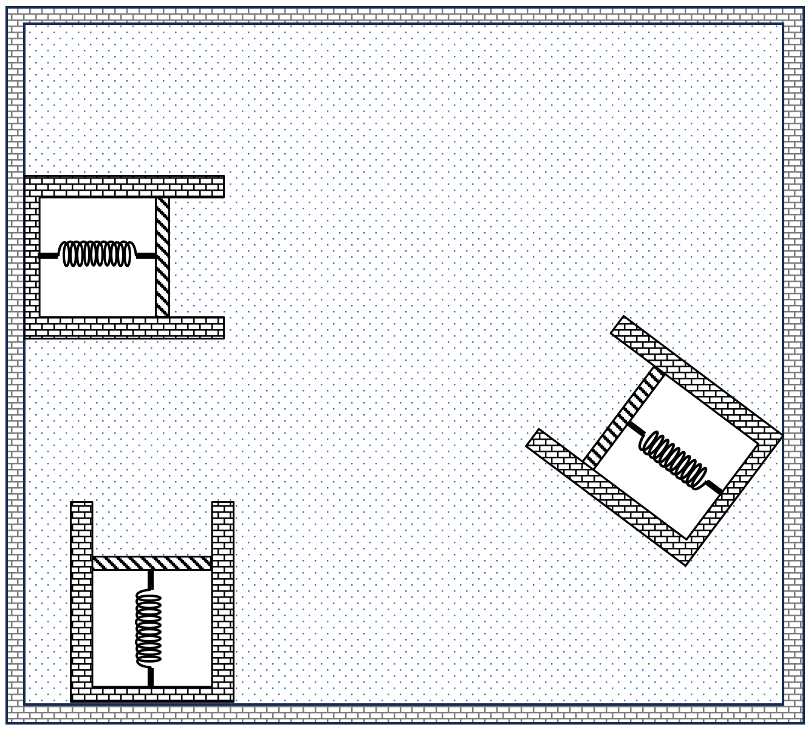
Diagram: Uniform Pressure Distribution.
Pressure variation without gravity
Consider two parallel surfaces, \(S_1\) and \(S_2\), each possessing an area of
\(dA\), situated within the fluid. Assume the pressures at these respective surfaces
to be \(P_1\) and \(P_2\).
If the segment of fluid enclosed between \(S_1\) and \(S_2\) experiences no net
external force, then the total force acting upon this fluid segment must be equal to
zero. This leads us to the relationship:
\(\qquad P_1 ( dA) = P_2 (dA) \)
\(\Rightarrow\quad P_1 = P_2 \)
In situations where the pressures at \(S_1\) and \(S_2\) are not same, the fluid
starts to
move, transitioning from regions of high pressure toward those of less
pressure. This motion persists until equilibrium is attained, and the pressures at
both surfaces equalize. If an incremental pressure \(\delta P\) is externally
applied at a specific location within the fluid and maintained, upon attaining a
steady state, the entire fluid's pressure will adjust uniformly, reflecting an
increment of \(\delta P\) throughout. This phenomenon aptly illustrates Pascal's
law, which is:
In a closed system containing an incompressible fluid, if there is any change in
pressure at one location, this change is evenly distributed throughout the entire
fluid volume. This fundamental principle is recognized as Pascal's law.
When an external force acts uniformly on every particle within a fluid, the pressure
at each point within the fluid does not remain constant. Instead, the pressure
adjusts so that, for any given fluid segment, the combined force resulting from the
pressure variation balances the externally imposed force. In a fluid situated in a
region affected by gravitational acceleration, the pressure is not uniform. Instead,
it varies to counterbalance the weight of specific fluid segments.
Variation in pressure due to gravity
In fluid mechanics, understanding the variation of pressure in a fluid under the
influence of gravity is pivotal. Let's delve into how this pressure behaves both
horizontally and vertically.
Consider two vertical parallel surfaces, \( S_1 \) and \( S_2 \), separated by a
distance \(
\Delta x \) as shown below:
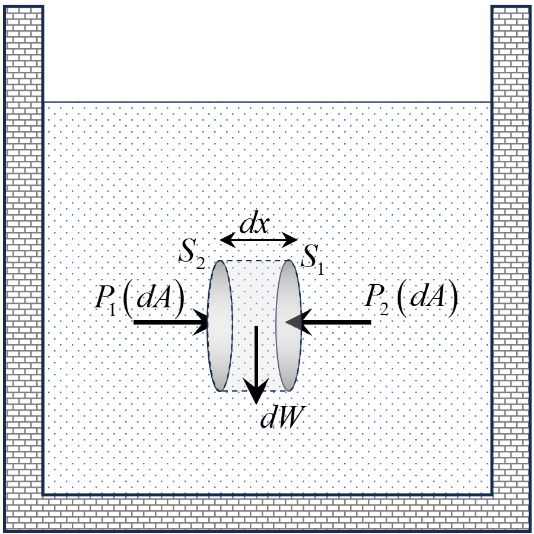
Diagram: Two parallel vertical surfaces inside fluid.
The pressure forces acting on these surfaces are in horizontal direction. Since there is
no effect of gravitational force in horizontal direction, we can state using Newton's
law that,
\(\qquad P_1 ( dA) = P_2 (dA) \)
\(\Rightarrow\quad P_1 = P_2 \)
Thus, pressures at two positions in the same horizontal level must remain same even
in
presence of gravity.
Now, let's reorient surfaces \( S_1 \) and \( S_2 \) to lie in the horizontal plane,
separated by a distance \( d y \). The pressure at the two surfaces are
considered as \(P_1\) and \(P_2\) and the weight of the fluid column between the
durface is \(dW\).
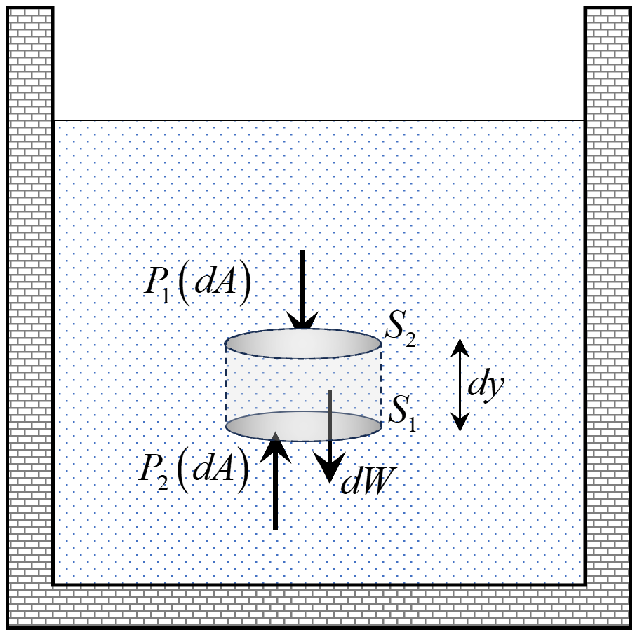
Diagram: Two parallel horizontal surfaces inside fluid.
From the free body diagram of the segment of fluid in between the surfaces \(
S_1 \) and \(S_2\)
\(\Rightarrow\quad P_2 -P_1=\rho g (dy)\) [\( \rho \) represents
the fluid density and \( g \) is the acceleration due to gravity]
This shows pressure increases in the direction of gravity. If such change in
pressure during depth \(dy\) is \(dP\), then:
\(\Rightarrow\quad dP=\rho g (dy)\)
If density remains constant for the fluid, then this result for small change in
pressure\(dP\) during small depth \(dy\) can be integrated both sides to obtain
change in pressure \(\Delta P\) during a depth \(y\) as:
\(\qquad \int{dP} =\int\rho g (dy)\)
\(\Rightarrow\quad \Delta P =\rho g y\)
Considering pressure to be \(P_o\) at top surface of the fluid, the pressure at
depth \(y=h\) is given as:
\(\qquad P -P_o=\rho g h\)
\(\Rightarrow\quad P =P_o+\rho g h\)
Pressure gradient
The pressure gradient denotes the rate at which pressure changes with respect to
position. If a pressure change \(dP_x\) takes place over a length \(dx\) in the
direction of the x-axis, the pressure gradient \(p_x\) along the
x-axis is defined as:
For a fluid of density \(\rho\) resting in a container, the absence of
horizontal pressure variation implies the horizontal pressure gradient component
is zero. Using our earlier analysis on pressure changes due to gravity, we
deduce:
\(\qquad P = P_o + \rho g y \) [\(y\) is the depth from the open
surface]
\(\Rightarrow\quad \frac{dP}{dy} = \rho g \)
Thus, in stationary fluids, the pressure gradient is zero horizontally, and is
non zero along vertical direction. Representing the pressure gradient as \(
\vec{p} \), we have:
\( \qquad\vec{p} = \rho \vec{g} \)
This principle is applicable even when the fluid's container undergoes
acceleration, denoted by \( \vec{a} \). In such scenarios, if our reference
frame aligns with the container, the container appears stationary. However,
Newton's laws requires accounting for pseudo forces. From this perspective,
the effective force on a mass \( m \) particle becomes:
We just learned that the analysis of variation of pressure can be done for fluids
in accelerated containers by attaching our frame of reference with that of
container itself. Using this principle, let us explore the variations in
pressure for following specific acceleration conditions:
Vertically Accelerated Container:
Consider a container with liquid in an elevator accelerating upwards
with an acceleration \( a_\text{o} \). This is shown in diagram below:
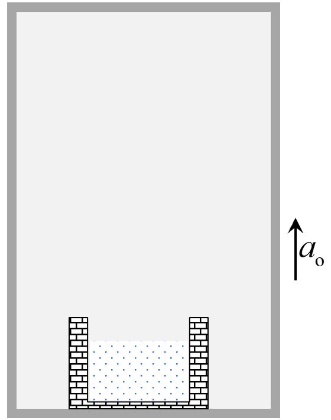
Diagram: Liquid accelerated
upwards.
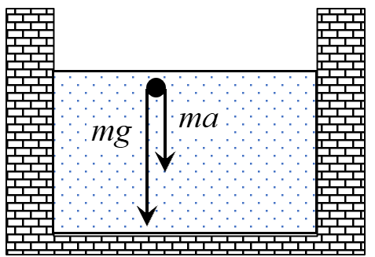
Diagram: Forces on liquid
particle relative to lift.
Relative to the container, the force acting on any general particle of mass
\(m\) is \(m(g+a_\text{o})\) downwards. So, the effective acceleration due
to gravity can be considered as \((g+a_\text{o})\). Therefore,
\(\Rightarrow\quad P = P_o + \rho \left(g+a_\text{o}\right) h\)
Thus, the pressure gradient and the pressure as a function of depth will
increase everywhere if the container is accelerated upwards. Similarly, if
the container is accelerated downwards:
\(\Rightarrow\quad P = P_o + \rho \left(g-a_\text{o}\right) h\)
Horizontally Accelerated Container:
Consider a container filled with liquid that's being accelerated
horizontally
with an acceleration \( a_\text{o} \). The scenario is depicted in the
diagram below:
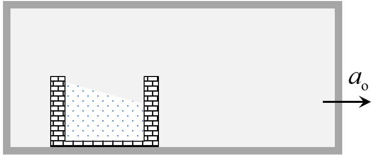
Diagram: Liquid accelerated
upwards.
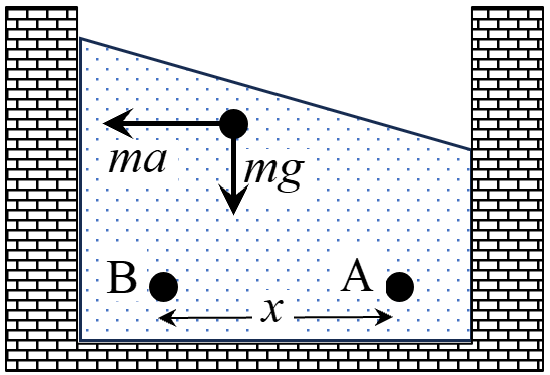
Diagram: Forces on liquid
particle relative to lift.
Relative to the container, the force acting on any general particle of mass
\(m\) is \(m(g)\) downwards and \(ma_\text{o}\) in horizontal direction.
Thus, the pressure gradient \( \frac{dP}{dx} \) along horizontal direction
is given as:
\(\qquad \frac{dP}{dx} = \rho a_\text{o}\)
And the associated variation in pressure at two points located in same
horizontal level A and B is:
It is important to note that the pressure gradient and the pressure
variation with height remains unaffected in vertical direction due to the
absence of any vertical acceleration. So, pressure at any vertical depth
\(h\)
measured from open surface will be:
\(\qquad P = P_\text{o} + \rho g h\)
Free surface of liquids
The free surface of a liquid is the interface between the liquid and the gas above
it, usually the atmosphere. In other scenarios, this interface could also be with
another immiscible liquid or a vacuum. The existence of a boundary surface for
liquids is due to a phenomenon called surface tension. The molecules at the
surface experience an inward force due to cohesive interactions with molecules
beneath them. However, there's no similar force from above, creating a "tension"
that forms a distinguishable boundary. The description of surface tension
will be given in detail in later sections.
The free surface of liquids in steady-state exhibits the following properties:
Uniform Pressure: The pressure remains uniform across
all points on the free surface. This uniformity is essential because any
variation in pressure would cause particles to move or flow along the
surface.
Forces Act Perpendicularly: For particles at the liquid's
surface, the net force acting on them is perpendicular to the surface. This
means there's no force pushing the particles to move along the surface.
Surface of accelerated liquids
If a liquid kept in a container is accelerated horizontally, pressure between two
points in same horizontal level within the fluid will become different. Thus height
just above the two points must also become different causing the surface of the
fluid to deviate from horizontal plane. This is illustrated in following diagram:
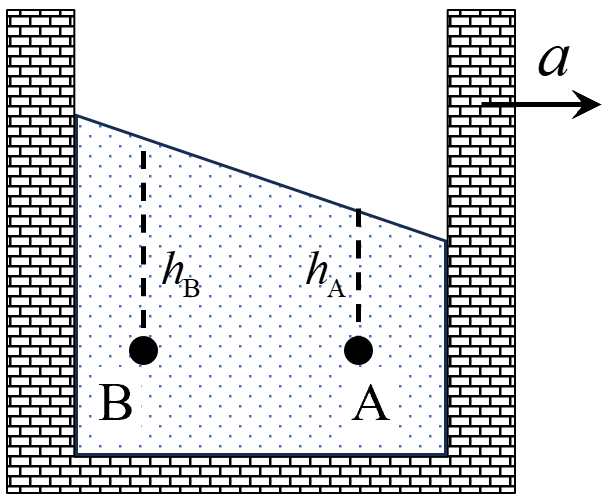
Diagram: Horizontally accelerated fluid
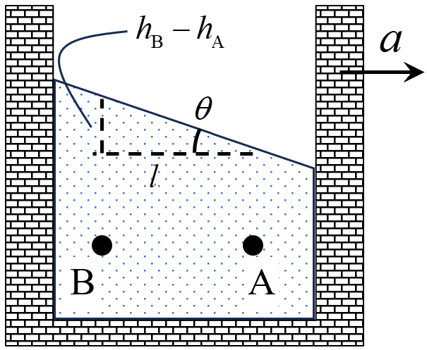
Diagram: Angle of surface
Consider two points, A and B, located within the fluid at the same horizontal level
as shown in above diagram. We can examine the difference in pressure between these
points due to the horizontal acceleration:
\(\qquad P_\text{B}-P_\text{A}=\rho a l\) [Here \(\text{AB}=l\)]
Since the fluid is in vertical equilibrium, the concept of pressure variation can be
used as:
\(\qquad \left(P_\text{o}+\rho g h_\text{B}\right)-\left(P_\text{o}+\rho g
h_\text{A}\right)=\rho a l\)
\(\Rightarrow\quad \rho g (h_\text{B}-h_\text{A})=\rho a l\)
This derived relationship between the angle of the surface and the ratio of
acceleration to gravitational force can be used to predict the orientation of the
liquid's surface under varying accelerations.
Surface of Rotating Liquids
When a liquid is contained within a vessel that's set into rotational motion, the
liquid tends to adjust itself in response to the centrifugal force arising from the
rotation. This adjustment often results in the formation of a parabolic free
surface, where the liquid is pushed outward, raising its level near the walls of the
container and lowering it at the center.
This phenomenon can be witnessed in everyday life, such as when a bucket of water is
swirled around. The water tends to rise along the walls of the bucket, creating a
depression in the center.
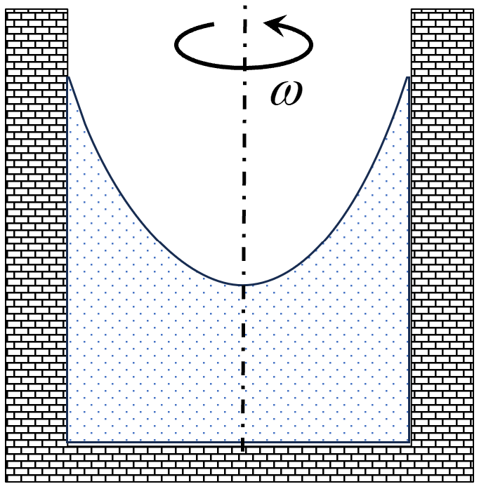
Diagram: Surface of rotating liquid
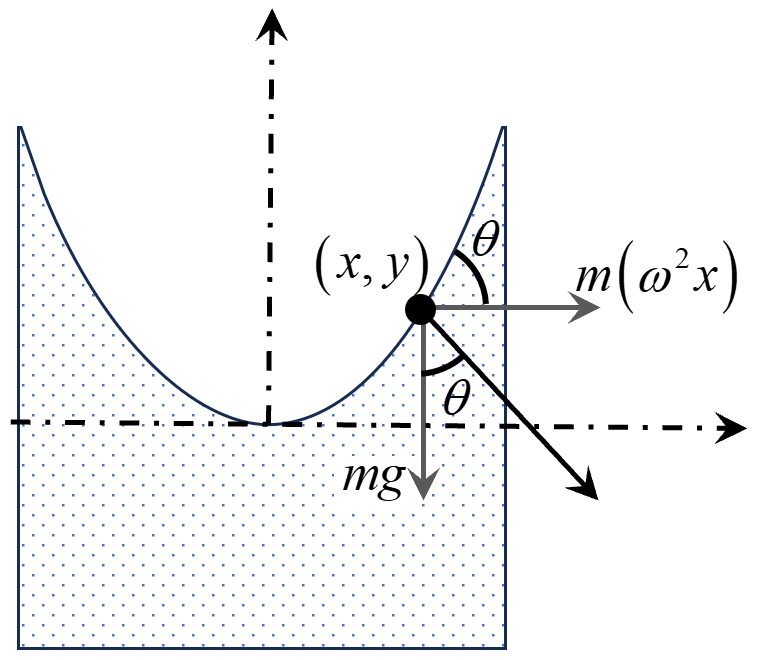
Diagram: Force on particle on surface of
rotating liquid
To understand this behavior, consider a particle of mass \(m\) on surface of such
rotating liquid as shown in above diagram. The co-ordinates of this particle is
shown as \(\left(x,y\right)\). Relative to this particle itself, the forces acting
are the weight of the particle \(\left(mg\right)\) and the pseudo force
\(\left(\omega^2 x\right)\) directed outwards from the axis of rotation. If the
resultant of these forces makes an angle \(\theta\) with vertical, then the surface
will be making the same angle \(\theta\) with horizontal at that location. The value
of
\(\tan\theta\) can be written as:
This is the slope of the surface at any general point \(\left(x,y\right)\). To find
equation of the curve visible in the diagram, we write slope to be same as
\(\frac{dy}{dx}\) and then perform the necessary integration. This is done below:
The equation represents a parabolic curve. If this parabolic curve is rotated about
the axis of rotation, the surface formed represents the actual surface of liquid in
rotation. Such surface formed by rotation of parabola is called a paraboloid.